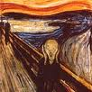
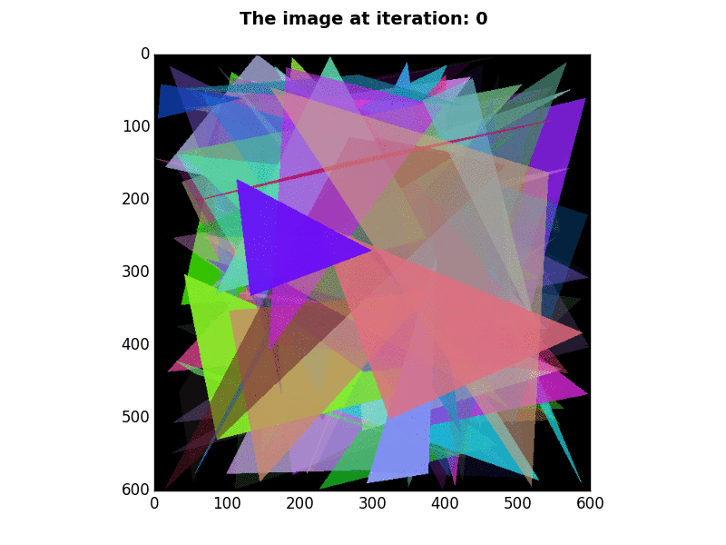
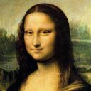
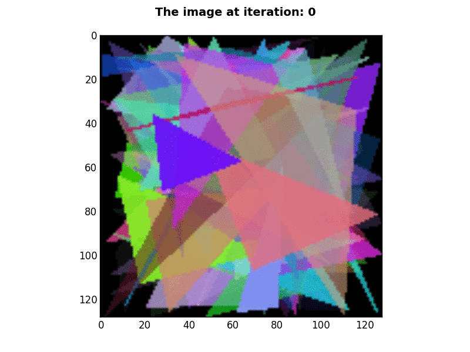

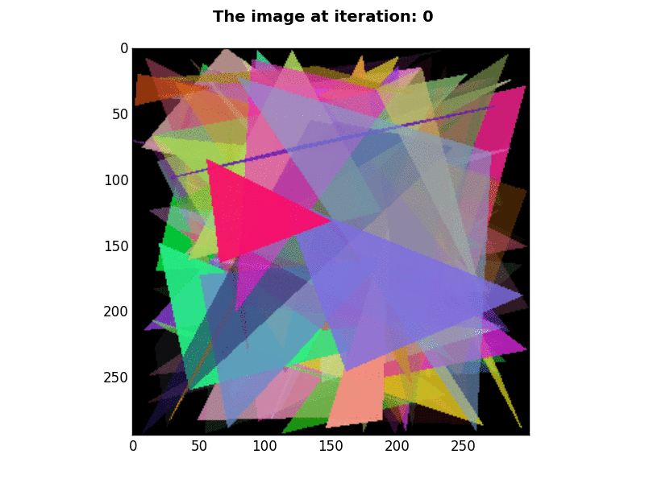
EECS 492 A1 Results
Christopher Spencer Buja
September 25, 2015
The purpose of this project is to recreate Roger Alsing's work on genetic programming to create art. The population consists of approximations to a given image. Each image uses P polygons, where P=100 for the results on this page. N is the population size and K is the number of new children created per generation. T is the number of generations displayed in each animation. The fitness of the image is a measure of how closely it matches the original image. The learning curve shows how the fitness of the best approximation improves over time. The 2D graphs depict how the fitness after T generations varies with N and K where the color of the points on the graph scale with the best fitness score obtained with parameters N and K.
| Original image | Approximation | Learning curve |
|---|---|---|
| 96×96 pixels |
P=100, N=1, K=2, E=331001 |
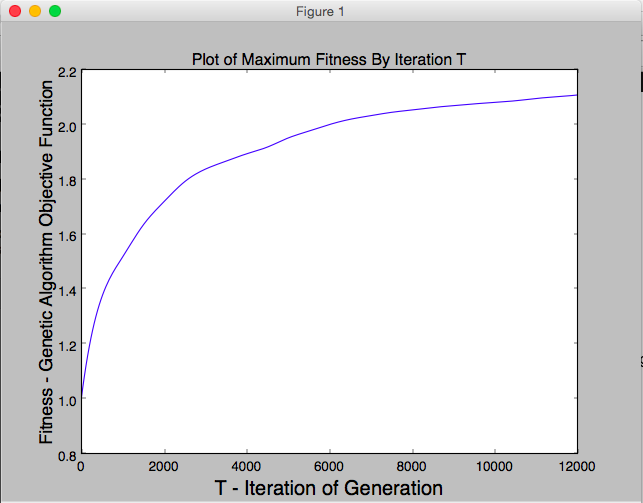 |
| 38×38 pixels |
P=100, N=1, K=2, E=133001 - This gif was created by displaying BGR values, instead of RGB values. |
|
| 102×102 pixels 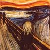 |
P=100, N=1, K=2, E=25,000 - This gif was created by displaying BGR values, instead of RGB values. 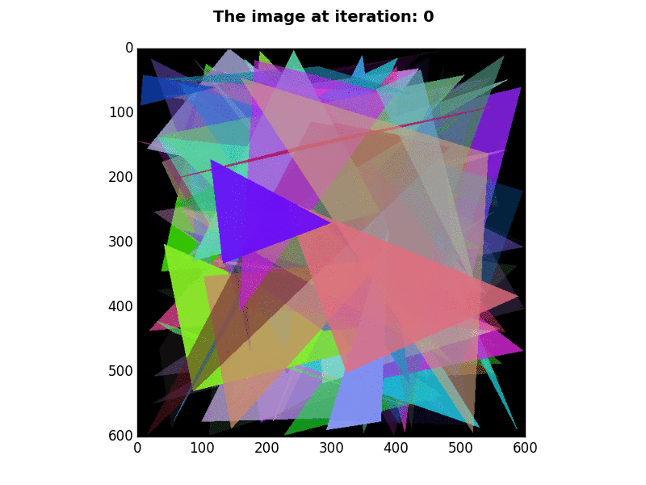 |
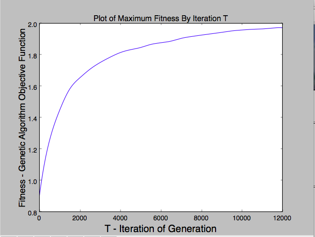 |
| 128×128 pixels 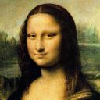 |
P=100, N=1, K=2, E=25,000 - This gif was created by displaying BGR values, instead of RGB values. 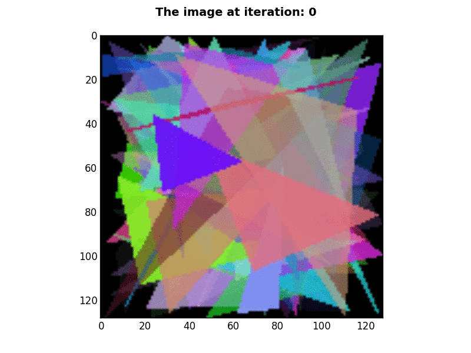 |
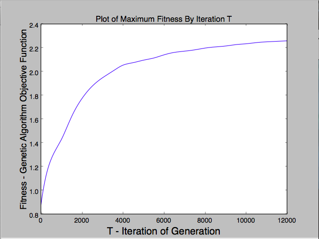 |
| 300×293 pixels |
P=100, N=1, K=2, E=25,000 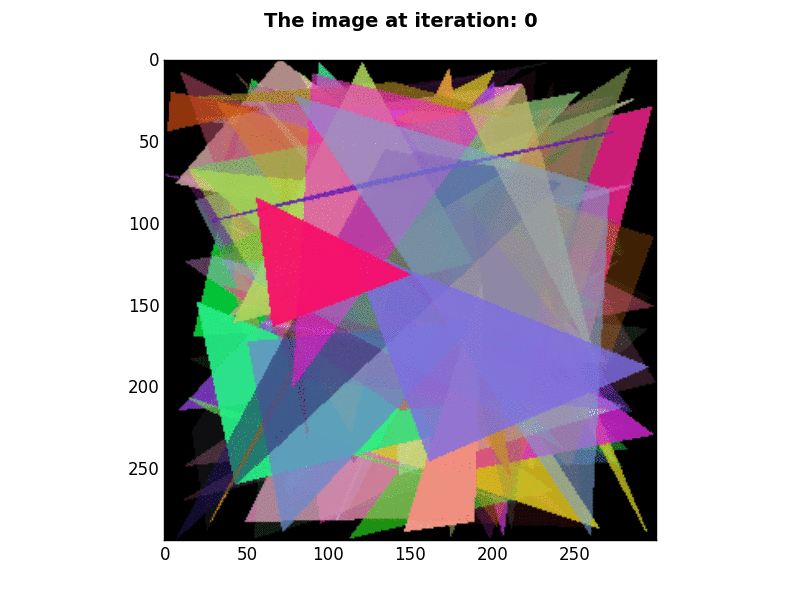 |
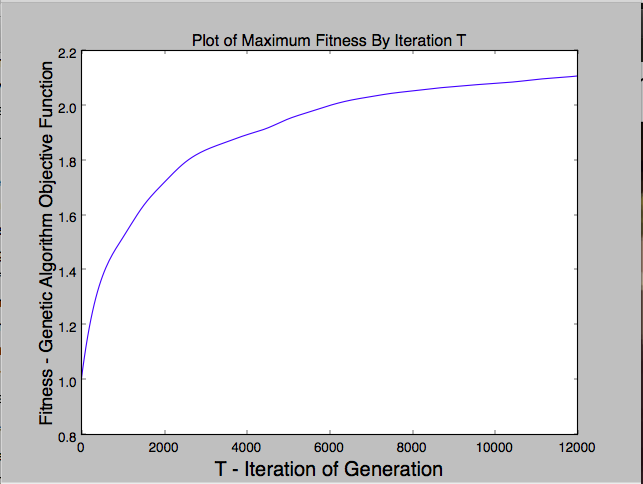 |
Mutations for a child generated from crossover:
Random triangles were created by picking three points on the image with uniform distribution, and filling the area between those points with an rgb and alpha value.
Parents were selected using the roulette selection algorithm. This made the more fit individuals more likely to be chosen for crossover.